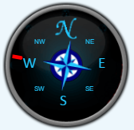
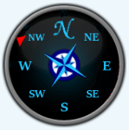
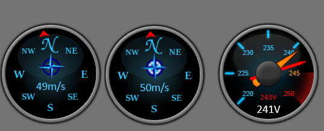
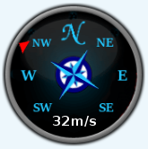

Branched from this thread
Firefox7518 has kindly developed a compass/windrose widget for use in emoncms dashboards.
It accepts a feed value of between 0 and 360, representing the wind angle, and is installed simply by dropping the decompressed attached folder into the /var/www/emoncms/Modules/dashboards/widget folder.
Well done Andreas!
Paul
Re: Compass/Windrose widget
Thanks Paul for making a separate thread out of it.
What do you think of my other version with the windrose in it and the full degrees printed on it?
Here the version for download: Download
Demo here: Demo
Re: Compass/Windrose widget
Realy nice work. But the windrose need to have a clr background.
Re: Compass/Windrose widget
Yes right. Didn't had the time to do that :-) If someone is good with GIMP and photoshop and can make it transparent would be really cool....
Re: Compass/Windrose widget
The one on Larsjo's post is transparent already. If it wasn't it would look like this.
Paul
Re: Compass/Windrose widget
Lol, thanks Paul, did not see that.
Ok, changed it to the one from Larsjo. It's a little big but on my machines and servers thats not a big issue.
Heres the download link: Download
I now also changed the width and height settings so that you can make it bigger than the standard Jgauge size. I think when bigger it's really playing it's thing well as the needle fits perfectly onto the degrees area :-)
Re: Compass/Windrose widget
A mixture of traditional & contemporary...

The central 'rose' rotates with the needle.
Paul
Re: Compass/Windrose widget
Nice, very nice!
Re: Compass/Windrose widget
Ok, what about having the choice of the background and needle? Like a dropdown (dial like) where you can choose from? This way we have only one compass/windrose widget instead of many floating around? :-)
What about a section here for modifications like this? Maybe below Showcase or Software?
Re: Compass/Windrose widget
But that would probably mean having a standard script with no dynamically generated numbers or indicators, and instead draw everything on the ping files instead.
eg - in my example above, the 'N' is part of the png image, whilst the 'E, W, S,' are drawn by the script.
Sounds ok to me, and doing it that way allows more artistic flair, as they would only have to create two 170 x 170 ping files, one for the dial & one for the pointer, and leave the script alone!
I suppose that would then make selecting a needle & background as a user option easier to implement?
Paul
Re: Compass/Windrose widget
Yes, I think for compass applications this could be ok. For jgauge it could be a little bit difficult as it's usage is more universal than the compass :-)
I'll give it a try. Code changes are maybe still necessary as the options will be defined in the code but we could do something like "useroption" where the file name needs to be a defined value and when stored to the widget folder it's really just adding the pics.
Re: Compass/Windrose widget
With all credit to Andi, I've redrawn the compass background and needle back to its basic state, also edited the js to strip out the functions which printed the degrees etc.
This hopefully will serve as a template for developers/users to be able to change the compass widget to new designs just by editing & replacing the needle3.png & windrose.png files.
Andi has suggested that we post artwork in the 'Showcase' section of the forum, which sounds good to me.
Paul
Re: Compass/Windrose widget
Hi all
I made an approach to customize it even more. My new version allows you to choose from background images and needle types.
I have the jgauge standard background, Windrose, and the background from Pau,l above.
For needles, I have the standard Jgauge needle with ticks, the simple digital one without ticks and the digital needle without ticks.
You now can simply choose in the widget settings, what to use.
This way, we can add the png files, and add them to the config like in my example. Aim is to have as many useful designs as possible in the compass. So, happy designing! Put your designs here and we maybe can vote which ones should be included?
Download link
Let me know your thoughts,
Andi
Re: Compass/Windrose widget
Sounds good to me. I've redrawn my offering, so that the compass bearing's are not generated by the script, to fit into Andi's template above.
As before, the central 'rose' rotates with the pointer - link to dashboard.

Paul
Re: Compass/Windrose widget
Nice Paul, maybe include that in master repo?
Re: Compass/Windrose widget
Hi Paul
That's nice. I seem to have some issues with my multi selection compass widget but the standard one is working fine.
Chaveiro, I have the normal one here: Github Compass folder Do you want to take it from there? I did not include the files from Paul for now as I still want to have a selectable widget where you can chose from the design from but as a js novice I'm a little bit lost with this rendering stuff :-/
Re: Compass/Windrose widget
So i've made some code refactoring, added 2nd feed to windrose for wind speed or other value you want to show and commited to github. Hope you like how it ended looking.
Re: Compass/Windrose widget
Thanks Chaveiro
I think you can delete the compass_render.js in the windrose folder as it is not be used.
It should also be not mandatory to give a 2nd feed. That's why we didn't include it. If you know how to make the 2nd feed optional that would be great. Same as for the Jgauge2. Because then we would only need one Jgauge widget with the option of having a 2nd feed :-)
Thanks
Andi
Re: Compass/Windrose widget
I too agree about the second feed for windspeed for the following reasons;
In respect of jguage2, the reason why I had held back on merging it, was that as Andi has pointed out, it's still not complete. Andi and I were hoping to get some coding support in making the second feed optional, so that it could replace the existing jguage.
Paul
screenshot of merged windrose;
Original windrose:
Re: Compass/Windrose widget
I forgot to save some image to git, see if its better.
The value can be used to show any other data, like the wind direction in degrees also.
Disabling a feed on a widget is not supported... It's easier to create new widgets with different behaviours anyway.
Also added min value support to jgauge and jgauge2 widgets.
Edit: Which one you like more?

Re: Compass/Windrose widget
Moving the second feed value lower down on the dial makes way for the original pointer with the central windrose artwork which rotates with the pointer.
To accommodate it I've deleted 'S' but we all know where south is....
Paul
